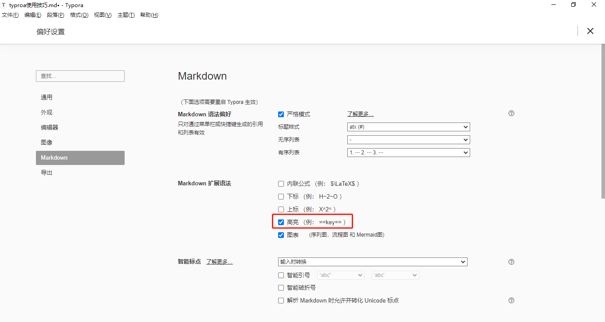

typroa使用技巧
1.大纲：
Ctrl+1:一级标题
Ctrl+2:二级标题
2.高亮显示
关于高亮这个问题，有代码高亮和文字高亮：
文字高亮：
使用方法是在要高亮的文字前后加上
==,如：==高亮显示==代码高亮：
英文输入格式使用```+代码格式，如java格式高亮：
1
int a=1;
设置：文件 -> 偏好设置（也可以快捷键：Ctrl+，）
Markdown -> Markdown扩展语法 -> 勾选高亮

3.列表
1.无序列表
+，-，*表示无序列表，前后留一行空白，可嵌套。如:
- 一级
- 二级
- 二级
- 三级
- 三级
- 四级
- 一级
2.有序列表
1. 点后面有空白，如：
- 一级
- 二级
- 二级
- 一级
4.大纲折叠标题
文件 -> 偏好设置（也可以快捷键：Ctrl+，）
外观 -> 侧边栏 -> 勾选

5.去除上一行格式
ctrl+[
6.插入代码块
ctrl+Shift + K
7.格式化代码块
Shift + Tab
8.加粗
ctr+b